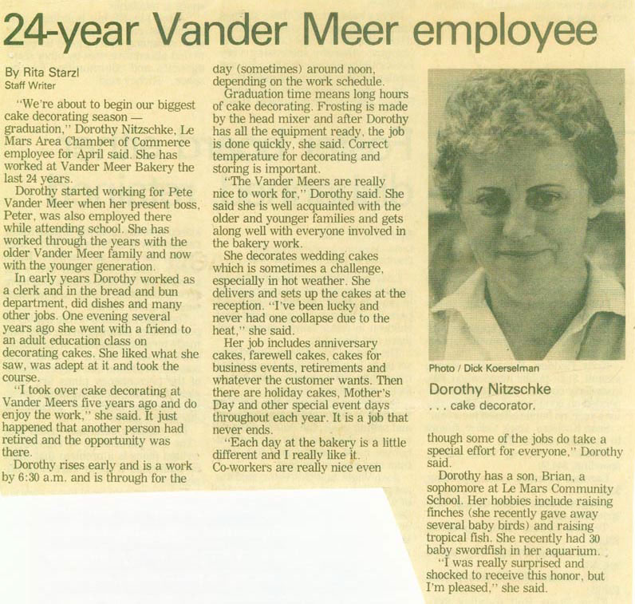

Chamber Employee of the Month

Article from 1983. Dorothy Nitzschke stayed with the bakery for 46 years!
Sun, November 25th 2007, 7:17 AM PST
Brian
Mom she is still with it in her 60s now but still doing cakes and getting up early she has stayed at the bakery through the closing and now the brand new owners a true die hard
Great Site keep the pics coming